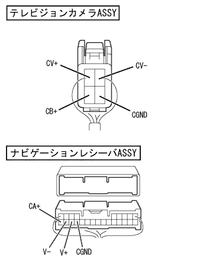
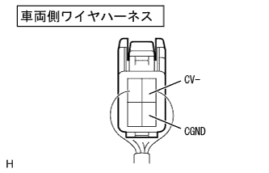
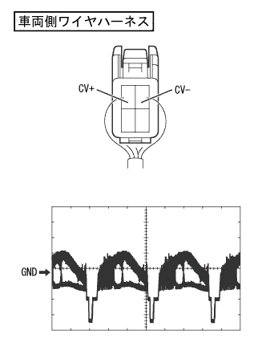

Back guide monitor system back guide monitor image is strange (color, disturbed image) |
reference)reference)reference)| Step 1 | Wire harness and connector inspection (Navigation receiver ASSY ← → television camera ASSY) |
referencePreparation before inspection
|  |
Separate the connector H and television camera ASSY connector H and television camera ASSY of the navigation receiver ASSY.
Conduction inspection
Use SST (Toyota Electrical Tester) to inspect the conversation between the navigation receiver ASSY and the television camera ASSY vehicle side wire harness with the connector separated.(The circuit diagram isreference)
| Measurement terminal (terminal number) (Navigation receiver ASSY ← → television camera ASSY) | standard |
|---|---|
| CA+(H24) ← → CB+(4) | There is an conductor |
| CGND (H21) ← → CGND (3) | There is an conductor |
| V+(H22) ← → CV+(2) | There is an conductor |
| V- (H23) ← → CV- (1) | There is an conductor |
|
| ||||
| OK | |
| Step 2 | Television camera ASSY inspection (CV+, CGND, CV-) |
Conduction inspection
|  |
Use SST (Toyota Electrical Tester) to inspect the CV-terminal ← → CGND terminals from the back of the vehicle wire harness connector with the connector of the vehicle side wire harness.(The terminal array isreference)
| Measurement terminal (terminal number) | Measurement conditions | standard |
|---|---|---|
| CV- (1) ← → CGND (3) | Always | There is an conductor |
|  |
Waveform inspection
Using an oscilloscope, check the waveform from the back of the vehicle wire harness connector with the connector of the vehicle side wire harness.(The terminal array isreference)
| item | Content |
|---|---|
| Measuring terminal | CV+(2)+← → CV- (1) |
| Instrument set | 0.2V/Div, 0.2μs/Div |
| Measurement conditions | IG Switch ON, Shift Lever R Range |
|
| ||||
| OK | ||
| ||